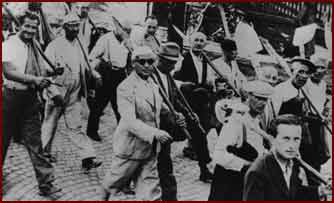

|  | |||
| Jewish men called up for “labour service for the public interest” (the idea and practice were introduced in 1939), working in their ordinary clothes with a yellow band around their arms. They built roads, cleared forests, and evened the land. From 1942 on they did the same, but in military operational areas. | |||